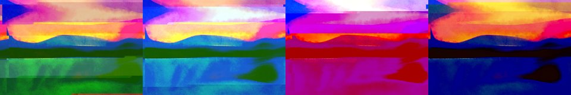

← Async Art — living works · all collections
by Hulki Okan Tabak · Async Art Master #2623 · four-phase · time rule: UTC
Updates four times a day to reflect sunrise / day / sunset / night cycles.

Sunrise 06:00–06:59 · Day 07:00–17:59 · Sunset 18:00–18:59 · Night 19:00–05:59 (UTC)
The full-size files live on IPFS; each is linked on three public gateways, in the order to try them (gateway.pinata.cloud, ipfs.io, dweb.link). Every line says what our own check found: 5 we keep this file pinned, 5 our own copy, pinned here and verified on upload.
bafybeigvy3bqp… gateway.pinata.cloud · ipfs.io · dweb.link — our own copy, pinned here and verified on upload, checked 2026-09-22bafybeibl226cf… gateway.pinata.cloud · ipfs.io · dweb.link — our own copy, pinned here and verified on upload, checked 2026-09-22bafybeihllq4am… gateway.pinata.cloud · ipfs.io · dweb.link — our own copy, pinned here and verified on upload, checked 2026-09-22bafybeidc4ob3b… gateway.pinata.cloud · ipfs.io · dweb.link — our own copy, pinned here and verified on upload, checked 2026-09-22bafybeibmpkhrx… gateway.pinata.cloud · ipfs.io · dweb.link — our own copy, pinned here and verified on upload, checked 2026-09-22QmUfJSm3P3fe4w… gateway.pinata.cloud · ipfs.io · dweb.link — we keep this file pinned, checked 2026-09-24 11:46Qmchf9gC6QWbuN… gateway.pinata.cloud · ipfs.io · dweb.link — we keep this file pinned, checked 2026-09-24 11:46Qmchf9gC6QWbuN… gateway.pinata.cloud · ipfs.io · dweb.link — we keep this file pinned, checked 2026-09-24 11:46QmfT5KdxMWbvkf… gateway.pinata.cloud · ipfs.io · dweb.link — we keep this file pinned, checked 2026-09-24 11:46QmW6pif9H9GsPF… gateway.pinata.cloud · ipfs.io · dweb.link — we keep this file pinned, checked 2026-09-24 11:46QmQatgbpFfh8jv… gateway.pinata.cloud · ipfs.io · dweb.link — we keep this file pinned, checked 2026-09-24 11:46Staring at an alien landscape, you wonder if the actual alien is the place or you yourself. Looking outward because you can't look the other way, you spot a figure familiar from books of some other childhood. There in the distance to your right, or whatever direction this strange place permits, swims a big figure of folk and lore alike. You can't contain the excitement. You can ignore the people supposedly serious stern sharp shipshape indeed around you. You can not ignore yourself. You shout. You shout inadvertently. IS THAT A WHALE? Minted 2021 on Async Art by Hulki Okan Tabak Based on photographs of things and places. Edited to abstraction through age and tear. Refigured reconfigured…
async.art · OpenSea · Etherscan
Generated archive pages. Content identifiers point to the public IPFS network.